The wonderful world of Game ON 2.0
Friday, March 8, 2013
Although the Game ON 2.0 exhibition opens to the public tomorrow, I’ve been at the Ontario Science Centre setting up our part of the exhibition as well as attending the blogger preview and media events over the past two days. In this post, I want to get you excited.....so excited, that you will HAVE to go.....
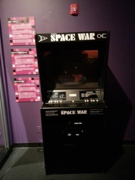
When you first walk into the exhibit, you’re going to take a deep dive into ancient video game history. You’ll see pinball machines, including a very rare Atari pinball (Atari only made a few pinball machines in the late 1970s, and they had very wide playfields).
You’ll also see an old Space War game, originally done on a DEC PDP-1 computer at MIT, and shown on a fancy “arcade-like” console with keyboard buttons :
And.....oh wait.....they have a DEC PDP-1 computer too! They also have a punchcard terminal, as well as both versions of the earliest commercial arcade game (Computer Space), which was inspired by Space War and created by Nolan Bushnell:
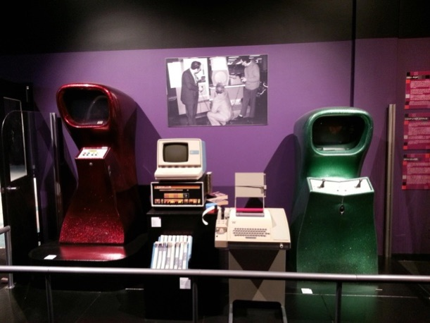
Nolan Bushnell later went on to form Atari and create Pong (you can play it on the projector using the controls on the podium):
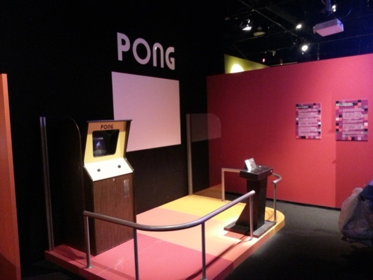
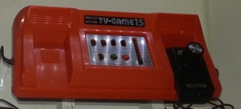
In fact, Nintendo’s first home game console wasn’t the NES, it was an orange Pong clone from the 1970s:And, where would we be without the game that popularized video games worldwide and started the Golden Age of Video Games...... that’s right, Space Invaders..... the game that chewed up $2 billion in quarters within a few years and caused a coin shortage. However, like all games in the exhibition, this one is set to free play:
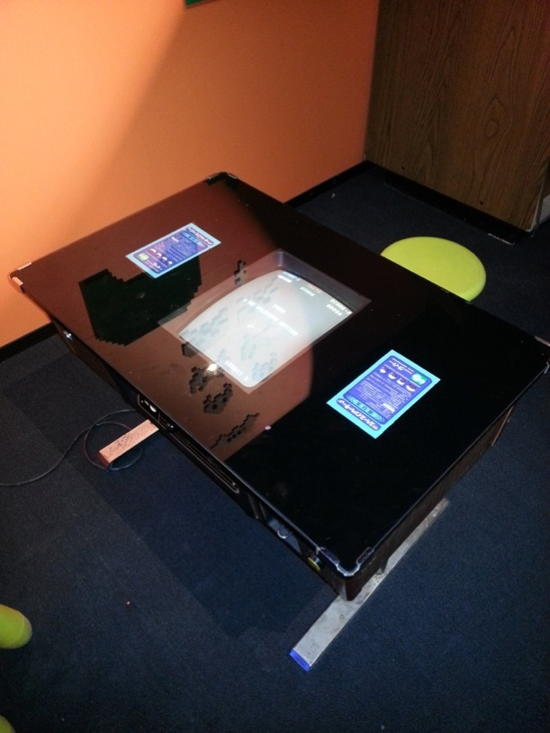
You’ll see a plethora of vintage game consoles and PCs, loaded with some awesome games that you can play on the ORIGINAL controllers! It almost seems as if this section goes on forever.....I’d have to take hundreds of photos to capture it all!
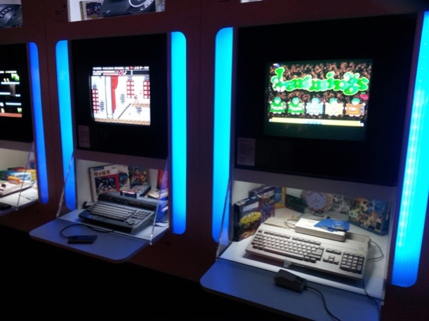
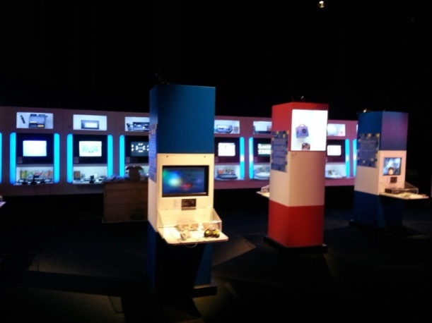
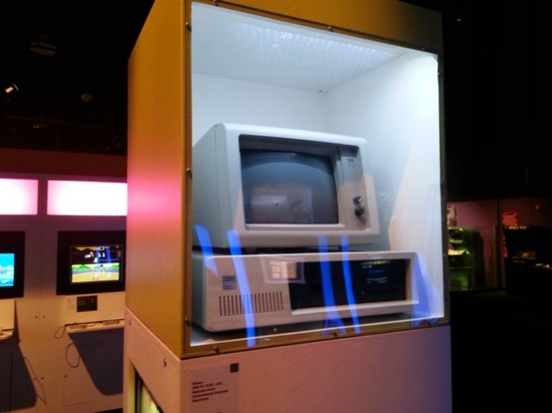
You’ll also see a big section that showcases the huge history of portable gaming too - here is only one part of one of the exhibits (many of them are interactive too!):
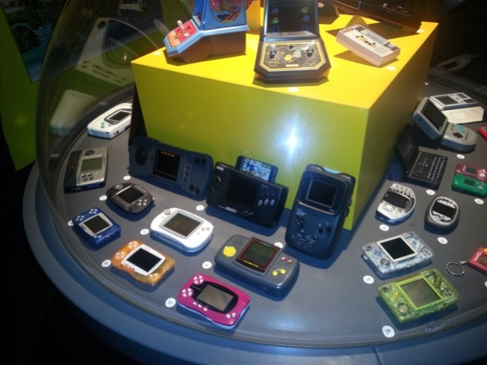
The walls are adorned with video game concept sketches, art, game posters, popular culture artifacts, and even a life-sized Lara Croft, who we caught checking out Chris (games can be sexist you know....):
There are also big sections with sit-down driving games, music games, RPG games, and even virtual reality games. Below is a picture of Chris and Felicia next to the virtual reality sphere right after it was set up for the first time. The goggles are easy to put on, and the landscape around you moves only if you are in the sphere. Oh, and yes, you have a gun and can shoot things too....
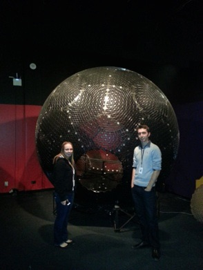
Of course, my favorite part of the exhibition is the arcade section (if you don’t know why, just read my previous blog posts ;-)
The machines are original in every way. They have the original electronics (the public doesn’t get to see this - we were there when they were setting up, so we saw it).
They are naturally worn and wonderfully musty smelling.
The decals and control panels show their original wear, and the lighting is arcade style (dim, to better see the screens).
In short, visitors are going to get an absolutely authentic arcade experience!!!!
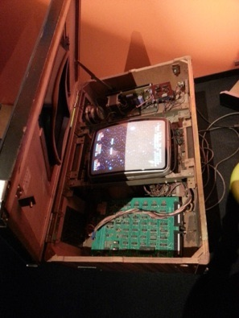
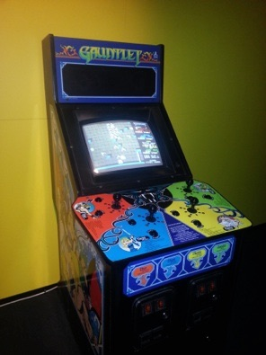
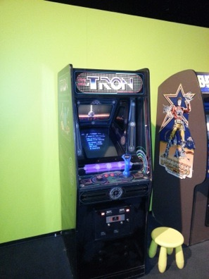
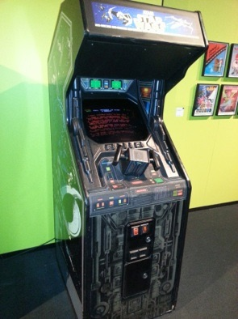
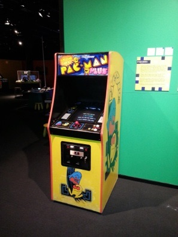
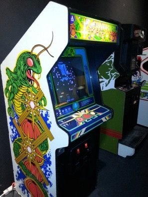

Of course, I just had to roll over the Galaga arcade to 1 million points (had some onlookers by the end ;-) There was also some great live music from the renowned Toronto chiptune artist JeffTheWorld, who is actually using a GameBoy to create music below:
The even had Gamer Grub (4 flavors) and Space Invader themed cappuccinos (the Space Invader dissolves slowly in your cup):
The bloggers and media people were equally amazing too - they really engaged with the exhibits. The two pictures below are Shaun Hatton from Electric Playground showing his megashaun bag, and a new blogger trio with an awesome name (3 Killa Bytes).
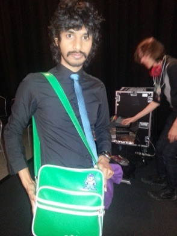
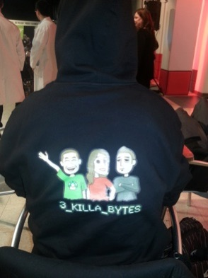
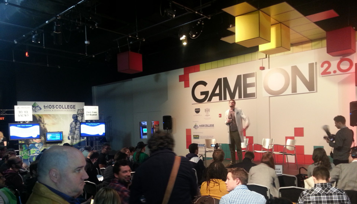